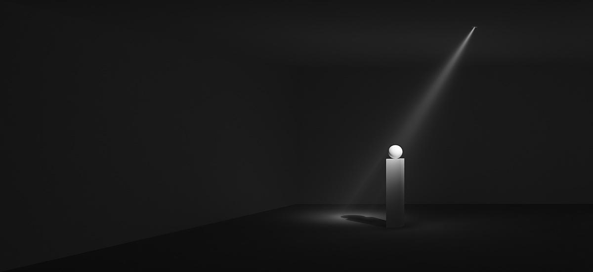
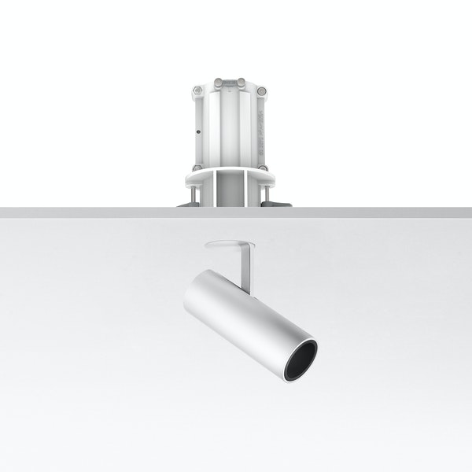
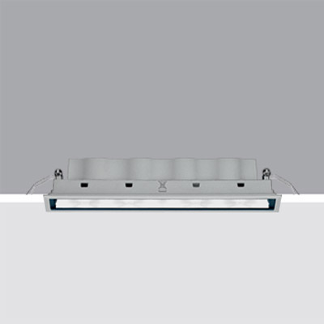
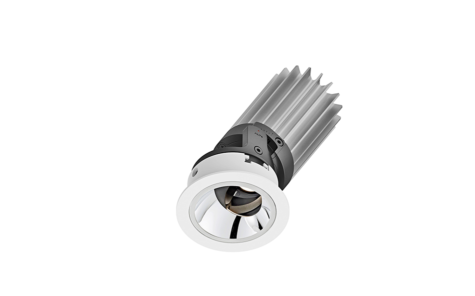
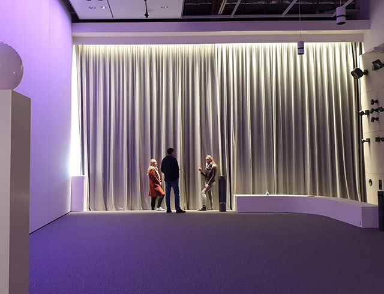
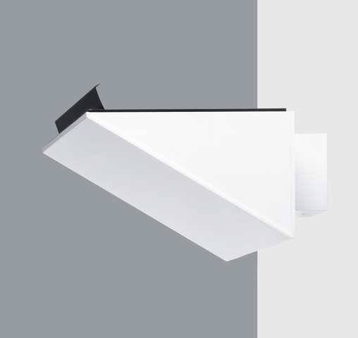
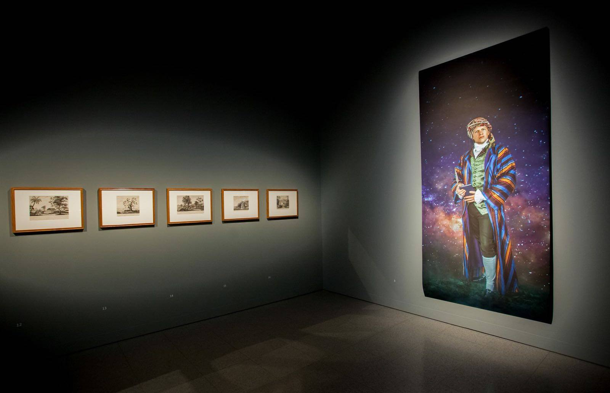
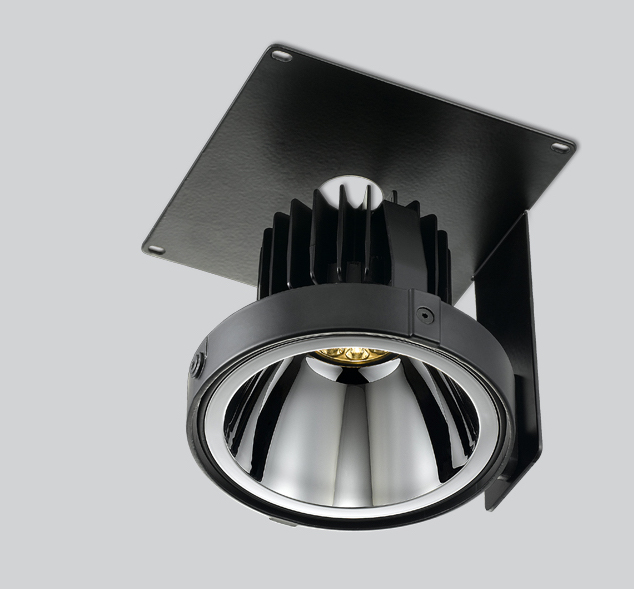
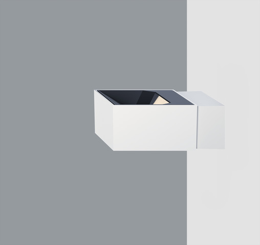

Architectural Product Guide & Specification Master
A2/29 Ashirwad Apts, Paschim Vihar, Delhi
Project Consultations & Architectural Specifications
Appointments: +91 993630555718 Chak, Zero Road, Prayagraj, India
Factory Assembly, Engineering & Photometrics Lab
Contact: contact@retina.com40/101 Lukerganj, Prayagraj, India
Live Lighting Simulation, Darkroom & Optics Showcase
Appointments: +91 9335154645“ Illuminate your life with experienced lighting “
Master Luminaire Matrix
Full cross-matrix mapping luminaire types across mounting geometries (Fixed, Adjustable, Recessed, Surface, Track) and mounting heights (Single Height 9ft/10ft/12ft, Double Height, Triple Height).
| LUMINAIRE TYPE | — | — | — | — | — | — | — | — | — |
|---|---|---|---|---|---|---|---|---|---|
| DOWNLIGHT | — | — | — | — | — | — | — | — | — |
| — | FIXED | FIXED | FIXED | FIXED | ADJ | ADJ | ADJ | ADJ | FIXED |
| Single Height<br>9FT | 10FT | 12FT | — | — | — | — | — | — | — | — | — |
| Single Height<br>9FT | 10FT | 12FT | D1CR.3S | D2CR.3S | D3CR.3S | D4CR.3S | D+1CR.3S | D+2CR.3S | D+3CR.3S | D+4CR.3S | D1CS.3S |
| Double Height | — | — | — | — | — | — | — | — | — |
| Double Height | D1CR.6S | D2CR.6S | D3CR.6S | D4CR.6S | D+1CR.6S | D+2CR.6S | D+3CR.6S | D+4CR.6S | D1CS.6S |
| Triple Height | — | — | — | — | — | — | — | — | — |
| — | D1CR.9S | D2CR.9S | D3CR.9S | D4CR.9S | — | — | — | — | — |
| WALL HIGHLIGHTER | — | — | — | — | — | — | — | — | — |
| WALL HIGHLIGHTER | RECESSED | RECESSED | RECESSED | RECESSED | SURFACE | SURFACE | SURFACE | SURFACE | TRACK |
| Single Height<br>9FT | 10FT | 12FT | — | — | — | — | — | — | — | — | — |
| Single Height<br>9FT | 10FT | 12FT | W1CR.3S | W2CR.3S | W3CR.3S | W4CR.3S | W1CS.3S | W2CS.3S | W3CS.3S | W4CS.3S | W1CT.3S |
| Double Height | — | — | — | — | — | — | — | — | — |
| Double Height | W1CR.6S | W2CR.6S | W3CR.6S | W4CR.6S | W1CS.6S | W2CS.6S | W3CS.6S | W4CS.6S | W1CT.6S |
| WALL WASHER | — | — | — | — | — | — | — | — | — |
| — | RECESSED | RECESSED | RECESSED | RECESSED | SURFACE | SURFACE | SURFACE | SURFACE | TRACK |
| Single Height<br>9FT | 10FT | 12FT | — | — | — | — | — | — | — | — | — |
| Single Height<br>9FT | 10FT | 12FT | W1CR.3A | W2CR.3A | W3CR.3A | W4CR.3A | W1CS.3A | W2CS.3A | W3CS.3A | W4CS.3A | W1CT.3A |
| Double Height | — | — | — | — | — | — | — | — | — |
| Double Height | W1CR.6A | W2CR.6A | W3CR.6A | W4CR.6A | W1CS.6A | W2CS.6A | W3CS.6A | W4CS.6A | W1CT.6A |
Human-Centric Lighting Theory
How illumination directly governs psychology, circadian rhythms, eye comfort, and spatial perception.
“ Our attention always goes towards the brightest point in a space “
Psychological Effect on Mind & Circadian Rhythm
Light has a huge impact on human behavior and mood. We feel alert or calm depending on whether cool or warm light is present.
Biologically, light is the primary external zeitgeber for our 24-hour circadian cycle, regulating cortisol production, appetite, and melatonin secretion for restorative sleep. The colour temperature and lux exposure tells your brain precisely what time of day it is.
Light as the 4th Dimension of Architecture
Along with time, light is commonly referred to as the 4th dimension of architecture. It impacts how we think, how we feel, and how we inhabit spaces.
We add drama through focused direct light, or soften and expand volume through indirect perimeter glow. Accent lighting emphasizes spatial depth, while orientation lighting intuitively directs human circulation.
IS3646 Illumination Standards & Visual Comfort
Before laying out luminaires, establish target lux levels based on the Indian Standard Code of Practice for Interior Illumination IS3646.
- Circulation & Foyers: 100–150 Lux
- General Living & Lounges: 150–200 Lux (Warm CCT)
- Kitchen Worktops & Food Prep: 400–500 Lux (High CRI >90)
- Reading Desks & Offices: 500 Lux (Low UGR < 19)
Glare Elimination: Discomfort vs. Disability Glare
Glare is the leading cause of eye strain and visual fatigue. Retina luminaires eliminate direct diode exposure through secondary dark reflectors and deep regressed baffles.
By enforcing an optical cut-off angle exceeding 30°, the fixture recedes into the ceiling plane, illuminating surfaces without becoming a source of visual irritation (UGR < 19).
Common Lighting Mistakes to Avoid
Mistake 1: Symmetry over Task. Laying out an evenly spaced grid of downlights across a ceiling ignoring furniture and task surfaces creates a dull, uninspiring interior while wasting energy.
Mistake 2: Over-Illumination & Flatness. Lighting an entire room equally eliminates natural shadows, washing out architectural textures.
Body Activity Level & Night Shift Dynamics
Your body activity levels—how alert or drowsy you feel—are directly modulated by spectral wavelength and brightness.
Retina Night Shift technology provides smooth, flicker-free transitions: energetic 4000K–5000K daylight during morning peak productivity, gradually warm-dimming down to 2700K–1800K candlelight in the evening to preserve natural melatonin secretion.
Architectural Recessed Downlights
Downlights throw precision illumination downwards onto horizontal task planes, accentuating tables, kitchen islands, and focal objects. Deep secondary reflectors ensure glare-free visual comfort.

Floor Highlighter D1
D1CR.3S (D1a.1.1)Compact Ø55mm cutout downlight with 24° precision lens and white trim. Glare-free optic for residential hallways and lounges.

Deep Anti-Glare D2
D1CR.3S (D2a.2.2)Deep recessed architectural luminaire with specular chrome reflector. Ø70mm cutout, height 60mm, IP44 rating.

Architectural Square D3
D1CS.3S (D3a.3.3)Square aperture high-output luminaire. 125×125mm cutout, DALI-2 dimmable driver, architectural baffle.

High-Output Accent D5
D1CR.6S (D5a.2.2)Double-height ceiling downlight. 12W, Ø63mm aperture with Ø75mm cutout. High-candela center beam.
| LUMINAIRE TYPE | — | — | — | — | — |
|---|---|---|---|---|---|
| DOWNLIGHT | — | — | — | — | — |
| DOWNLIGHT | FIXED | ADJ | SURFACE | TRACK | SLOT MOUNTED |
| Single Height<br>9FT | 10FT | 12FT | — | — | — | — | — |
| Single Height<br>9FT | 10FT | 12FT | D1CR.3S | D+1CR.3S | D1CS.3S | D1CT.3S | D4RS.3S |
| Double Height | — | — | — | — | — |
| Double Height | D1CR.6S | D+1CR.6S | D1CS.6S | D1CT.6S | D4RS.6S |
| Triple Height | — | — | — | — | — |
| Triple Height | D1CR.9S | — | — | — | — |
| Lighting Tool | Lighting Tool | Downlight | Downlight | Downlight | Downlight | Downlight | Downlight |
|---|---|---|---|---|---|---|---|
| Mounting | Mounting | Concealed | Concealed | Surface | Surface | Track | Slot Mounted |
| Beam Angle | Angle | 7º | 15º | 24º | 36º | 45º | 65º |
| Beam Angle | Adjustment | Fixed | Fixed | Fixed | Adjustable | Adjustable | Adjustable |
| Brightness | Brightness | Low Brightness | Low Brightness | Bright | Bright | Very Bright | Very Bright |
| Control | Control | Dimmable | Dimmable | Dimmable | Non Dimmable | Non Dimmable | Non Dimmable |
Surface & Cylinder Downlights
Engineered for exposed concrete slabs, wooden beams, and areas where recessed depth is unavailable. Crisp cylindrical architectural geometry.

Surface Cylinder D11
D1SR.3S (D11a.1.1)Architectural ceiling surface cylinder with internal heatsink and anti-glare baffle. Clean ceiling mounting flange.
Wall Highlighters & Framing Projectors
Throws directional light towards the vertical plane to spotlight artwork, paintings, sculptures, and architectural feature walls without spill.

Zoomable Focus D10
W1CR.3S (D10a.2.2)Zoomable optical focus downlight. 14° to 32° continuous zoom adjustment, Ø75mm cutout, 355° rotation.

Ball Spotlight D51
W1SR.3S (D51a.1.1)Multi-axis spherical ball spotlight with 360° rotation and 90° tilt. Machined aluminum body, 7W 3000K 90CRI.
| LUMINAIRE TYPE | — | — | — | — |
|---|---|---|---|---|
| WALL HIGHLIGHTER | — | — | — | — |
| WALL HIGHLIGHTER | RECESSED | SURFACE | TRACK | PULL OUT |
| Single Height<br>9FT | 10FT | 12FT | — | — | — | — |
| Single Height<br>9FT | 10FT | 12FT | W1CR.3S | W1CS.3S | W1CT.3S | W1CP.3S |
| Double Height | — | — | — | — |
| Double Height | W1CR.6S | W1CS.6S | W1CT.6S | W1CP.6S |
| Lighting Tool | Lighting Tool | Wall Highlighter | Wall Highlighter | Wall Highlighter | Wall Highlighter | Wall Highlighter | Wall Highlighter |
|---|---|---|---|---|---|---|---|
| Mounting | Mounting | Concealed | Concealed | Surface | Surface | Track | Pull out |
| Beam Angle | Fxed Lens | 7º | 15º | 24º | 36º | 45º | 65º |
| Beam Angle | Zoom Lens | 12º-45º | 12º-45º | 12º-45º | 10º-70º | 10º-70º | 10º-70º |
| Brightness | Brightness | Low Brightness | Low Brightness | Bright | Bright | Very Bright | Very Bright |
| Control | Control | Dimmable | Dimmable | Dimmable | Non Dimmable | Non Dimmable | Non Dimmable |
Asymmetric Wall Washers
Wall washing provides perfectly uniform vertical luminance from ceiling trim to floor skirting board. Because vertical illuminance expands the perceived volume of a space, wall washing delivers the highest visual comfort index in architectural lighting.
| LUMINAIRE TYPE | — | — | — | — |
|---|---|---|---|---|
| WALL WASHER | — | — | — | — |
| WALL WASHER | RECESSED | SURFACE | TRACK | CIELING WASH |
| Single Height<br>9FT | 10FT | 12FT | — | — | — | — |
| Single Height<br>9FT | 10FT | 12FT | W1CR.3A | W1CS.3A | W1CT.3A | W1WS.3A |
| Double Height | — | — | — | — |
| Double Height | W1CR.6A | W1CS.6A | W1CT.6A | W1WS.6A |
| Lighting Tool | Wall Washer | Wall Washer | Wall Washer |
|---|---|---|---|
| Mounting | Concealed | Surface | Track |
| IP | IP40 | IP65 | IP65 |
| Height Upto | 3M | 6M | 6M |
| Brightness | Bright | Very Bright | Very Bright |
| Control | Dimmable | Non-Dimmable | Non-Dimmable |
Micro-Relief Texture Grazers
Positioned close to rough stone, exposed brick, timber battens, or acoustic plaster, texture grazers cast crisp, ultra-narrow micro-shadows that dramatize tactile depth and material richness.
| LUMINAIRE TYPE | — | — | — |
|---|---|---|---|
| Texture Grazer | — | — | — |
| Texture Grazer | LINEAR | CURVE | IN-GROUND |
| Single Height<br>9FT | 10FT | 12FT | — | — | — |
| Single Height<br>9FT | 10FT | 12FT | L1RS.3G|020 | L+1RS.3G|021 | L1FR.3G|022 |
| Double Height | — | — | — |
| Double Height | L1RS.6G|020 | L+1RS.6G|021 | L1FR.6G|022 |
| Triple Height | — | — | — |
| Triple Height | L1RS.9G|020 | L+1RS.9G|021 | — |
| Lighting Tool | Texture Grazer | Texture Grazer | Texture Grazer |
|---|---|---|---|
| Mounting | Linear | Curve | In-ground |
| IP | IP40 | IP65 | IP65 |
| Height Upto | 3M | 6M | 9M |
| Brightness | Bright | Very Bright | Very Bright |
| Control | Dimmable | Non-Dimmable | Non-Dimmable |
Architectural Uplights & Inground Wells
Recessed flush into exterior paving, timber decks, interior stone floors, or landscape lawns. Emphasizes columns, archways, and vegetation with striking upward contrast.

Landscape Spike D110
U1SR.3S (D110a.2.4)Exterior landscape projector with ground spike. 12W, IP65 waterproof housing, 24V remote driver.
| LUMINAIRE TYPE | — | — |
|---|---|---|
| Uplight | — | — |
| Uplight | FIXED | ADJ |
| Single Height<br>9FT | 10FT | 12FT | — | — |
| Single Height<br>9FT | 10FT | 12FT | U1FR.3M | U+1FR.3M |
| Double Height | — | — |
| Double Height | U1FR.6M | U+1FR.6M |
| Lighting Tool | Uplight | Uplight |
|---|---|---|
| Mounting | Recessed | Surface |
| IP | IP65 | IP68 |
| Height Upto | 3M | 6M |
| Brightness | Bright | Very Bright |
| Control | Dimmable | Non-Dimmable |
Linear Cove & Architectural Contour
Indirect fill lighting designed to uniformly wash ceiling vaults and perimeter coves without scallop lines or dark socket shadows. Recommended vertical clearance: H=50cm ideal, H=10cm minimum with diffuse optics.
| LUMINAIRE TYPE | — | — |
|---|---|---|
| LINEAR LIGHT<br>[COVE] | — | — |
| LINEAR LIGHT<br>[COVE] | TRAY | PERIMETER |
| D<=20 | — | — |
| D<=20 | L1CV.IB|023 | L1RS.DB|024 |
| D>=30 | — | — |
| D>=30 | L1CV.IH|024 | — |
| CURVE<br>[TOP-BEND] | — | — |
| CURVE<br>[TOP-BEND] | L+1CV.IB|025 | — |
| Fitting Type | Size (mm) | Voltage (VDC) | Power (W) | CCT (K) | CRI |
|---|---|---|---|---|---|
| L1NS.DL|058 | 1000X10X11 | 24.0 | 18.2 | 3000K | >80 |
| L1NS.DL|063 | 1000X14X14 | 24.0 | 18.2 | 4000K | >80 |
| L1NS.DL|063 | 1000X14X14 | 24.0 | 18.2 | 6000K | >80 |
Curtain Grazers
Linear optical fittings tailored for ceiling curtain pelmets. Illuminates soft fabric folds uniformly from top hem to floor, with default Dim-to-Warm tuning for luxury residential hospitality.
| LUMINAIRE TYPE | — |
|---|---|
| LINEAR LIGHT<br>[CURTAIN GRAZER] | — |
| Single Height<br>9FT | 10FT | 12FT | — |
| Single Height<br>9FT | 10FT | 12FT | L1RS.3C|34 |
| Double Height | — |
| Double Height | L1RS.6C|34 |
| Fitting Type | Size (mm) | Beam Angle | Voltage (VDC) | Power (W) | CCT (K) | CRI |
|---|---|---|---|---|---|---|
| L1RS.3C|034 | 1000X16X12 | 10º | 24.0 | 15.2 | 3000K | >80 |
| L1RS.3C|034 | 1000X16X12 | 30º | 24.0 | 15.2 | 4000K | >80 |
| L1RS.3C|034 | 1000X16X12 | 60º | 24.0 | 15.2 | 6000K | >80 |
Control Gear & Dimming Drivers
Commercial and residential grade LED drivers engineered for zero-flicker dimming down to 0.1%. Fully compliant with international digital and analog dimming standards.

Remote Driver Pack 15W
D0.0.106Phase-cut TRIAC & DALI-2 dimmable driver. High power factor >0.95, THD <10%, SELV compliant.
Technical Appendix & Nomenclature Register
Complete engineering register for ceiling aperture cutouts, IP ingress ratings, optical louvres, and official product nomenclature syntax.
| — | THUMBNAIL | DESCRIPTION |
|---|---|---|
| DOWNLIGHT<br>DOWNLIGHT | — | <br>Lighting Tool:<br>Downlight<br>Lighting Distribution:<br>7º | 15º | 24º | 36º | 45º <br>Cutoff: 40º<br><br>To highlight the table<br>To highlight individual objects/spaces on horizontal plane |
| UPLIGHT<br>UPLIGHT | — | Lighting Tool:<br>Uplight<br><br>To highlight architectural details and add drama to a space |
| DIRECTIONAL<br>WALL HIGHLIGHTER | — | Lighting Tool:<br>Wall Highlighter<br>Lighting Distribution:<br>15º | 24º | 36º | ZOOM<br>Cutoff: 40º<br><br><br>To highlight artwork and paintings on wall<br> |
| DIRECTIONAL<br>WALL WASHER | — | Lighting Tool:<br>Wall Washer<br>Lighting Distribution:<br>Asymmetrical<br>Cutoff: 80º<br><br>To uniformly wash a feature wall<br> |
| — | THUMBNAIL | DESCRIPTION |
|---|---|---|
| LINEAR LIGHT<br>TEXTURE GRAZER | — | Lighting Tool:<br>Texture Grazer <br>Lighting Distribution:<br>Narrow Spot<br>Cutoff: 30º<br><br>To graze the texture by creating very sharp and thin shadows near the texture to add more depth<br>Requires very narrow beam of light<br>Especially good on natural surfaces like row stones and raw brick wall |
| LINEAR LIGHT<br>COVE | — | Lighting Tool:<br>Linear Light (Cove)<br><br><br>Fill Light |
| LINEAR LIGHT <br>CURTAIN GRAZER | — | Lighting Tool:<br>Curtain Grazer<br><br>To highlight the curtain fabric |
| LINEAR LIGHT <br>DIFFUSED | — | Lighting Tool:<br>Linear Light (Diffused)<br>Recessed | Surface | Suspension<br><br>Fill Light |
| DIMENSIONAL LIGHT<br>STRETCH CLOTH | — | Lighting Tool:<br>Stretch Cloth<br><br>Fill Light |
| — | — | — |
|---|---|---|
| INDOOR | IP20<br>[Ordinary] | An IP20 rating makes the LED light suitable for all indoor dry applications |
| INDOOR | IP40<br>[Not waterproof] | An IP40 rating will prevent insects from getting into the lights, but there is no protection from moisture |
| INDOOR | IP42<br>[Drip Proof] | IP42 rated LED lights are protected from tools and small wires greater than 1 millimetre. The lights can resist a few drops of water. |
| INDOOR | IP44 <br>[Splash Proof] | IP44 rated lights are suitable for bathrooms and applications exposed to water spray. |
| OUTDOOR | IP54 <br>[Dust Proof, Splash Proof] | IP54 lights offer protection against dust and splash, making them suitable for general outdoor use or damp indoor environments. |
| OUTDOOR | IP64 <br>[Dust Tight, Splash Proof] | IP64 products are fully protected against dust ingress as well as water splashes from any direction. |
| OUTDOOR | IP65 <br>[Dust Tight, Jet Proof] | An IP65 rating makes the product completely dust-tight with protection against low-pressure water jets from any direction. |
| OUTDOOR | IP66 <br>[Dust Tight, Watertight] | IP66 means the product is completely dust-tight as well as protected against high pressure water jets from any direction. |
| OUTDOOR | IP67 <br>[Dust Tight, Watertight] | An IP67 rated light is completely protected against solid particles, and can be submerged up to 1m in water for up to 30 minutes. |
| OUTDOOR | IP68 <br>[Dust Tight, Pressure Watertight] | An IP68 fitting is hermetically sealed and suitable for continuous immersion in water. |
[FAMILY] [SIZE] [MOUNTING] [SHAPE] . [HEIGHT] [OPTIC] | [CODE]